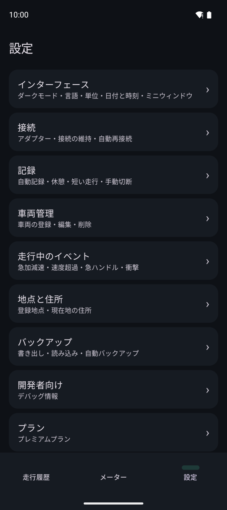
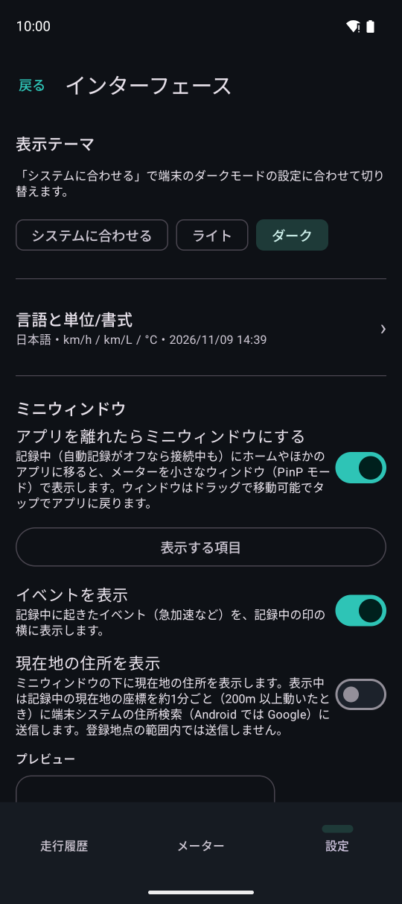
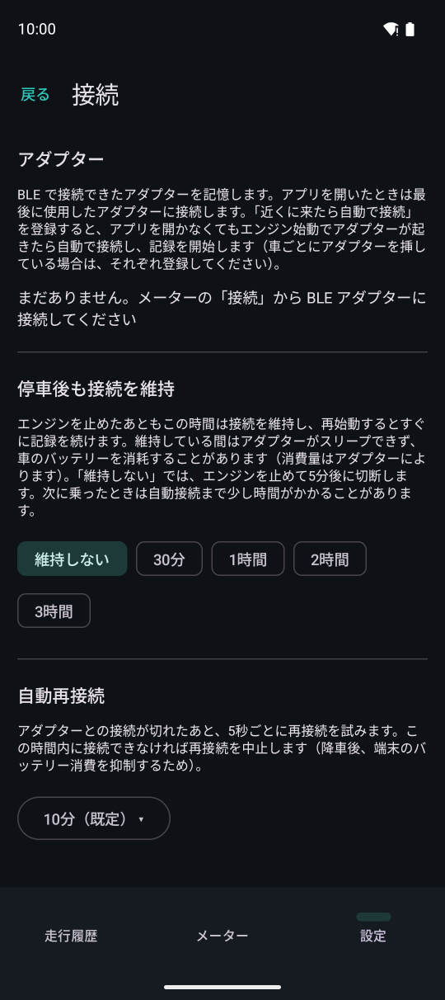
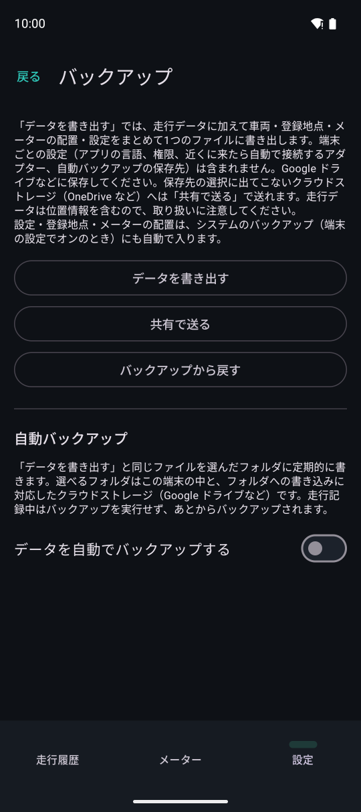

そのほかの設定

設定の一覧。
インターフェース
ダークモード・言語・単位（距離・燃費・温度・圧力・燃料）・日付と時刻の書式・週の始まり・ミニウィンドウの設定です。

接続
- 使ったアダプターの一覧。名前を付けたり、忘れたりできます
- 停車後も接続を維持：エンジンを止めたあともしばらく接続を保ち、すぐに再始動したときに記録を続けます
- 自動再接続：接続が切れたあと、この時間は再接続を試みます

地点と住所
登録地点（自宅など）の管理と、メーター・ミニウィンドウに現在地の住所を出す設定です。住所を出すと、表示中は現在地の座標を約 1 分ごとに端末の住所検索に送ります（既定はオフ）。
「走行時の天気を記録する」（既定はオフ）をオンにすると、出発・休憩・到着のときの天気を走行に残します。そのときの位置を約 1 km に丸めて MET Norway（ノルウェー気象局）に送ります。走行のルートは送りません。天気はその場で調べるので、電波のない場所では 1 時間まで取り直し、取れなければ残りません。
バックアップ
- 「データを書き出す」で、走行・車両・登録地点・給油記録・メーターの配置・設定を 1 つのファイルにまとめます
- 「バックアップから戻す」で、そのファイルから戻します（今のデータと置き換えます）
- 自動バックアップ（プレミアムプラン）：選んだフォルダ（Google ドライブなどのクラウドのフォルダも選べます）に定期的に書き出します
- Android の自動バックアップ（Google アカウントのバックアップ）でも、設定などが新しい端末に引き継がれます
